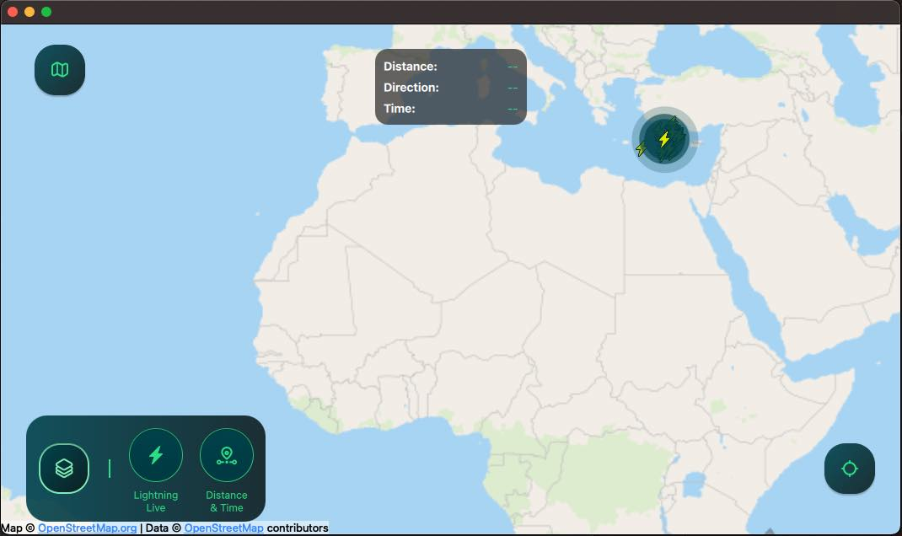

Lightning Viewer
An application with a responsive UI showing lightning strikes on a map in real-time by combining Qt Quick, Qt Location, Qt Positioning and Qt Websockets.

Running the Example
To run the example from Qt Creator, open the Welcome mode and select the example from Examples. For more information, visit Building and Running an Example.
Overview
Lightning Viewer is an application that receives lightning strike data from a WebSocket and displays it on a map in real-time. It features a responsive UI that adapts well to mobile, tablet and desktop-sized screens in both landscape and portrait orientation. Lightning strikes appear as icons on the map, and a separate overlay shows the distance and time of the last strike. These data layers can be hidden and revealed with toggles that are accessed by pressing the map layers button. There is also a switch for switching between map types and a button that centers the map at the user's location.
Application Structure
This application follows the Model-View-Controller (MVC) pattern. The LightningItemModel class serves as the model. It stores a list of LightningItemData objects and provides methods to insert new data and to get information about the latest strikes. The View is defined in multiple QML components that display the data and user interface and handle user interaction. The Controller class manages the data flow between the LightningItemModel and the QML components. The LightningProvider class opens a WebSocket connection to an online server from which it receives a JSON message for each occurring lightning strike. It parses the messages and passes the data on to the LightningItemModel via a signal connected to a slot in the Controller:
connect(m_provider.get(), &LightningProvider::dataReady, this, &Controller::onDataReceived);
Each lightning strike is represented by a LightningItemData struct. It contains the timestamp, latitude and longitude of the strike, and includes methods returning its distance and direction from the user location provided as a QGeoCoordinate. The LastStrikeInfo struct holds information about the last lightning strike.
LightningView.qml serves as the main view of the application. It is responsible for displaying the map and lightning data through the component MapView.qml, and the user controls through the component ActionsLayer.qml.
MapView.qml handles map zooming and panning. It uses a PositionSource to obtain the user’s current location and a Map to display the map. Furthermore, it includes a LightningMapLayer.qml for displaying the lightning data and a DistanceTimeLayer.qml for showing information about the last lightning strike.
ActionsLayer.qml provides a button for recentering the map and a custom switch control, SwitchMap.qml, for switching between different map types. It also includes a map layers button that reveals the map layer toggles. These toggles are defined in MapLayersItem.qml. In landscape orientation they appear next to the map layers button, while in horizontal orientation they are placed in a Drawer defined in MapLayersDrawer.qml.
Lightning strike data source
The application receives lightning strike data from a server maintained by Qt. The server provides a WebSocket API accepting connections on the following URL:
wss://ewea0y4bn0.execute-api.eu-north-1.amazonaws.com/production/
When connected, the server accepts two different JSON messages, included in lightningprovider.cpp as strings with backslashes to escape double-quotes. The first message will trigger the API to forward real world lightning strikes. The availability or accuracy of this data can not be guaranteed, as it depends on third party data providers. As an alternative solution, the second message will trigger the API to send simulated lightning strike data:
"{\"action\": \"forwardlightningdata\"}" "{\"action\": \"simulatelightningdata\"}"